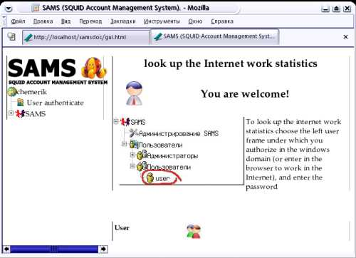

На левой панели находитс дерево конфигурации и управления. При выборе любого элемента в дереве настроек изменяется набор контекстнозависимых иконок в нижнем фрейме правой панели. Верхний фрейм Правой панели является также контекстно-зависимым, и его содержание зависит от выбора действий пользователя (щелчке по соответствующей действию иконке) в нижнем фрейме панели.
Пользователь Admin
По-умолчанию в системе зарегистрирован пользователь с
правами администратора Admin. Пароль пользователя Admin можно посмотреть
в дистрибутиве SAMS, в файле README.RUS
Пользователь admin может добавлять в WEB интерфейс новых пользователей с правами
администрировани SAMS
Пользователь Auditor
Пользователь-аудитор имеет права на просмотр статистики всех пользователей.
По-умолчанию в системе зарегистрирован пользователь Auditor. Пароль пользователя
Auditor можно посмотреть в дистрибутиве SAMS, в файле README.RUS
Остальные пользователи могут получить доступ к WEB интерфейсу SAMS после того, как в дереве конфигурации и управления найдут соответствующего им пользователя, и авторизуются в WEB интерфейсе SAMS. Проверка подлинности пользователя может происходить как в домене Windows (если SAMS настроен на работу в домене), или по паролям, хранщимся в базе данных SAMS.